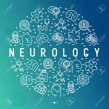

LifeCare Hospital
>>Department of Neurology<<
Introduction:
The department was set up in1950s under the Chairmanship of Late Prof K C Kandhari,and subsequently iconic
personalities
like Late Prof LK Bhutani (1974-1996), Prof JS Pasricha ( 1996-8) and Prof RK Pandhi (1998-2001) headed
the department.
Prof Prashant Chaurasia has been the head of the department since May, 2001.
Prof KC Kandhari and Prof LK Bhutani laid the
basic foundation of the department and started Neurology
training module which is still being followed with modifications
as per changing requirements.
The department has grown up in its size since then and has contributed remarkably to the Neurology specialty.
Under Prof Vinod K Sharma, the department has been expanded and modernized and has acquired four lasers and
expanded
neurosurgery,phototherapy and started research lab for dermatology and restarted PhD in neurology.
Faculty has been
trained to specilaise in pediatric neurology and neuroopathology.
Currently it has 11 faculty members, provides postgraduate training to 17 students, and research and training experience to
8 senior residents. Also, the department has 3 Ph D scholars doing research work in different areas of Neurology.
The department also provides various fellowships and training programs in bullous dermatosis, neurosurgery and
lasers, general neurology and STIs.
Every year around 50,000 patients visit the outpatient department and around 800 patients are admitted in the indoor department
and much larger number in day care for pulse therapy. The department provides the state of the art treatment in all domains of
Neuroology and is equipped with the most modern equipments.
A brief Introduction of Head Department of Neurology-
NAME: DR. PRASHANT CHAURASIA ||E-mail:aiimsakp@yahoo.com
Area of Interest :Vitiligo, Psoriasis, alopecia, contact dermatitis, drug eruptions
Qualifications and Fellowship-
MD Neurology and Venereology, AIIMS, New Delhi, May 1982
One year “Leprosy Research Fellowship” 1992-93
Fellow National Academy of Medical Sciences (FAMS)
Fellow Royal College of Physicians (FRCP) London
International Member American Academy of Neurology
Member European Academy of Neurology